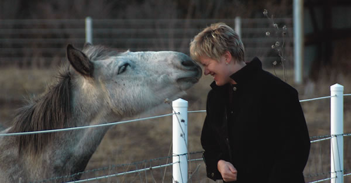

Many of us dream of finding the perfect piece of land where we can grow big gardens, raise chickens or goats, build a solar-powered home or otherwise pursue our individual visions of “the good life.” This kind of self-reliant lifestyle is sometimes called homesteading. It’s all about choosing to live in a more meaningful, hands-on sort of way.
Growing healthy, nutritious food is a vital part of the homesteading life. Rather than relying on food from a supermarket, produced by strangers thousands of miles away, we can enjoy the bounty of our own gardens and share it with friends and neighbors. By growing food in a greenhouse and preserving it by canning or freezing, we can eat homegrown food year-round.
Many homesteaders want to build their own homes. Some want to create their own energy from the sun, the trees and the wind. This kind of work can be deeply satisfying because it allows us to learn new skills, and to live more conscientiously?- and more consciously.
Although homesteading is often associated with rural living, you don’t need to buy land in the country to enjoy a more self-sufficient life: You can create your own food, shelter and energy wherever you live. Even with a small yard in the city or suburbs, you can plant a garden and learn to preserve food. Fruit trees can be planted almost anywhere, and many towns and cities will even allow you to put up solar panels, try out new building techniques, or raise chickens and rabbits.
This issue includes six articles to help you pursue your homesteading dreams:
• “Plan the Perfect Homestead,”
• “Build a Pond,”
• “Fish Farming,”
• “Our Far-out Free-range eggs,”
• “Discover Versatile Compact Tractors,”
• “Choosing and Training a Watchdog,”
In our interconnected world, no one is completely self-sufficient, but living a more self-reliant lifestyle can be a rich and rewarding experience. Where better to focus your time and energy than on the particular place you call home
-Mother
|
 Close connections with animals are among the many benefits of homesteading. |
|
|